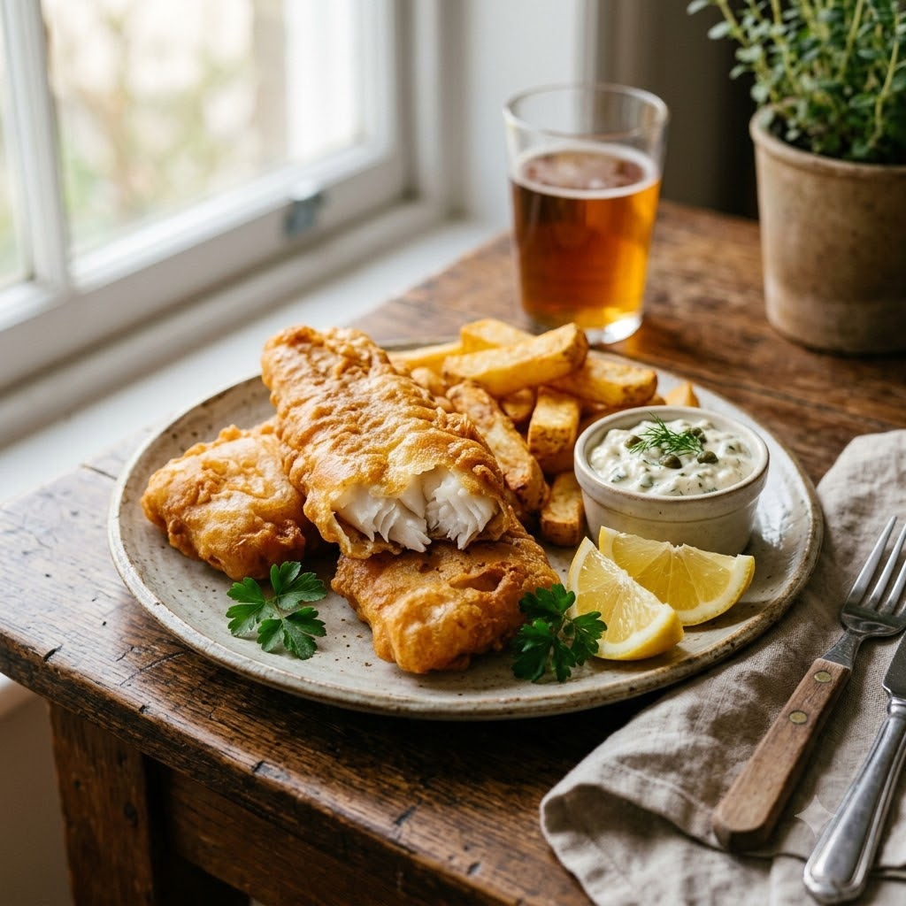

Crispy Airfryer Fish and Chips

Crispy Airfryer Fish and Chips
Airfryer – Fry 200°C 20 min — Serves 3
High-Protein • British • Everyday
Ingredients
- 3 firm white fish fillets
- 1/2 cup flour
- 1 egg, beaten
- 1 cup panko breadcrumbs
- 3 potatoes, cut into thick chips
- 2 tbsp oil
- Salt & pepper to taste
- Malt vinegar to serve
Method
1Preheat: Preheat the Airfryer to 200°C for 4 minutes before adding the food to the basket.
2Toss the potato chips with oil and salt; air-fry the chips at 200°C for 10 minutes.
3Meanwhile, coat fish fillets in flour, then beaten egg, then panko breadcrumbs.
4Push the chips to one side of the basket, spray the fish with oil, and add to the basket.
5Air-fry both together at 200°C for a further 10 minutes, until fish is golden and flakes easily and chips are crisp. Serve with malt vinegar.